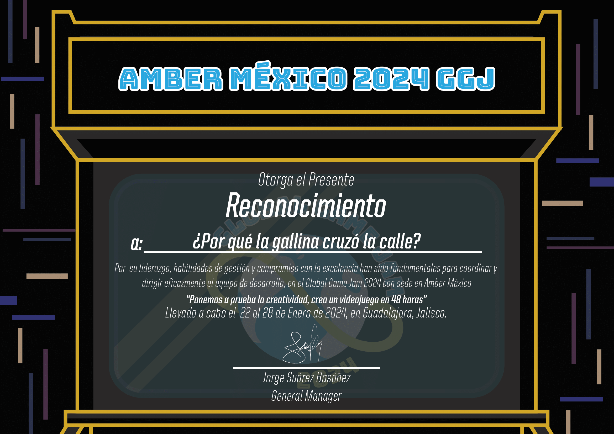
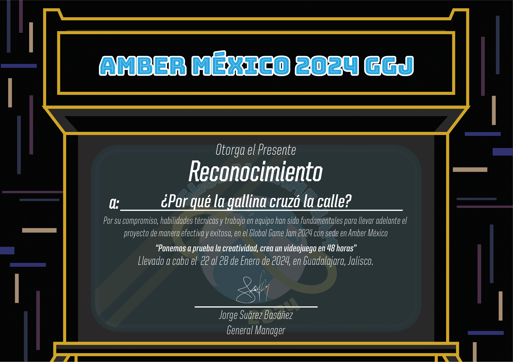
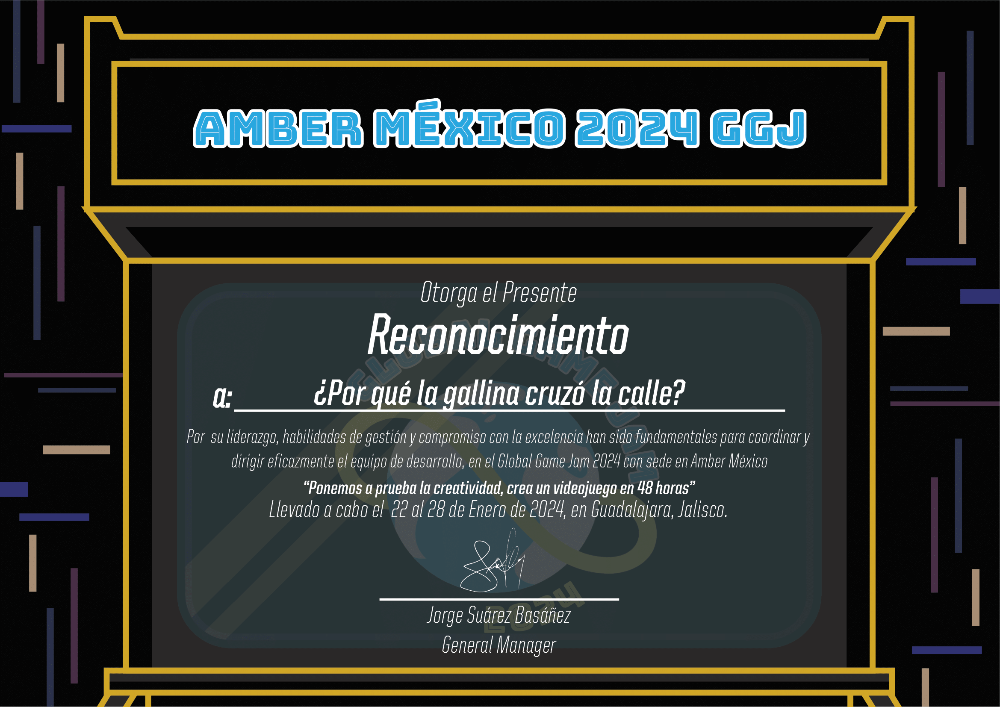
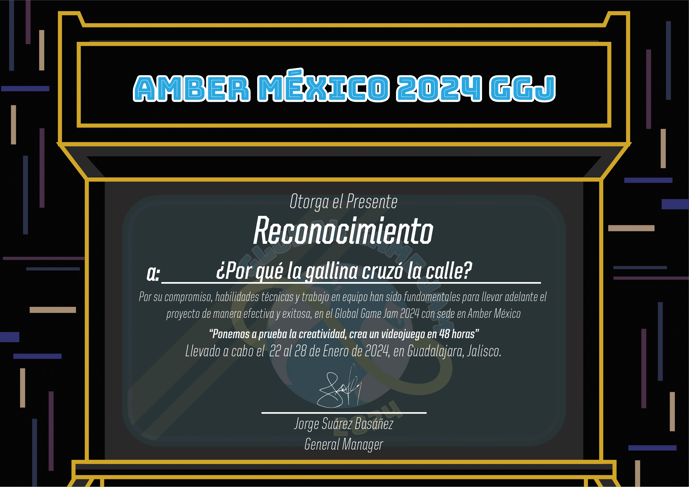
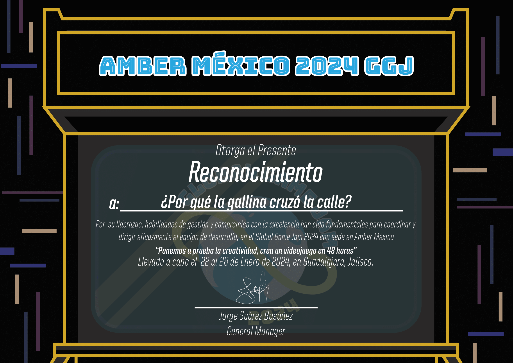
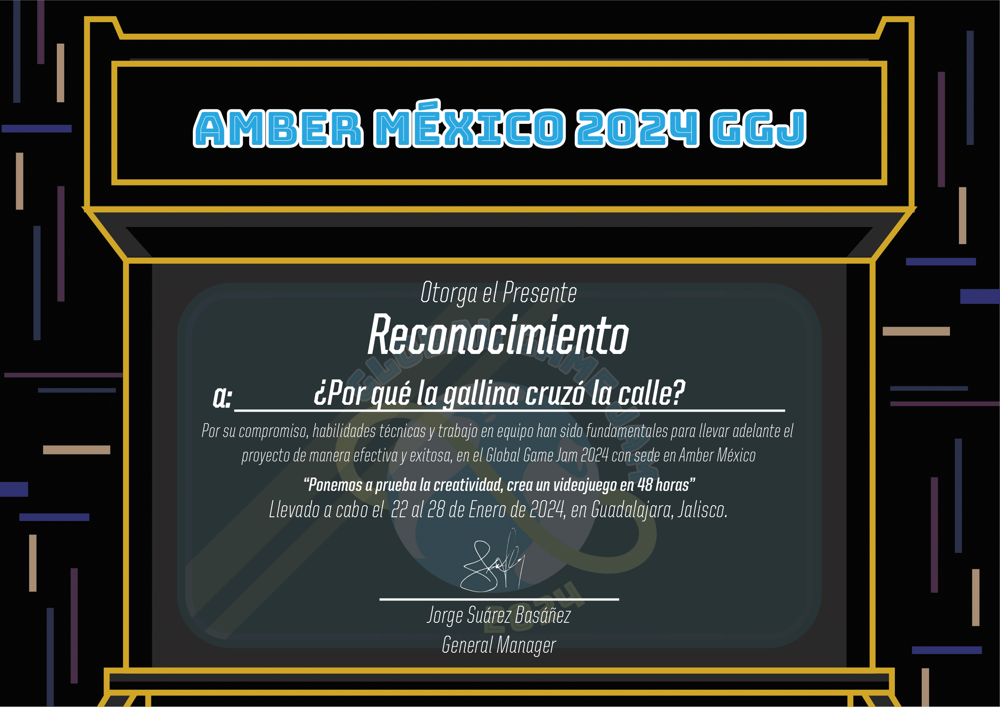

In January 2024, I participated in the Global Game Jam where I developed "¿Por qué la gallina cruzó la calle?", a 2D arcade game created using Unity and C#. My contributions included developing the code for character movement and implementing player respawn functionality. I also designed enemies that actively track the player. Additionally, I incorporated animations for both characters and enemies.
The project earned recognition from Amber Studio, who awarded us for excellence in narrative, development management, and production, highlighting our team's ability to deliver a compelling and well-managed gaming experience.

